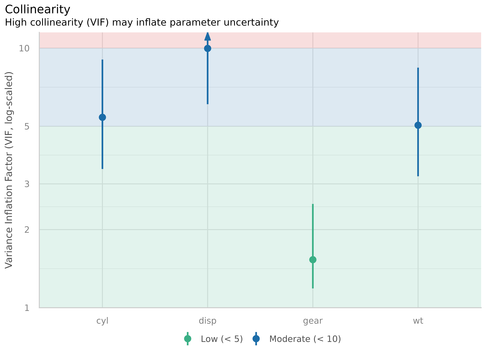
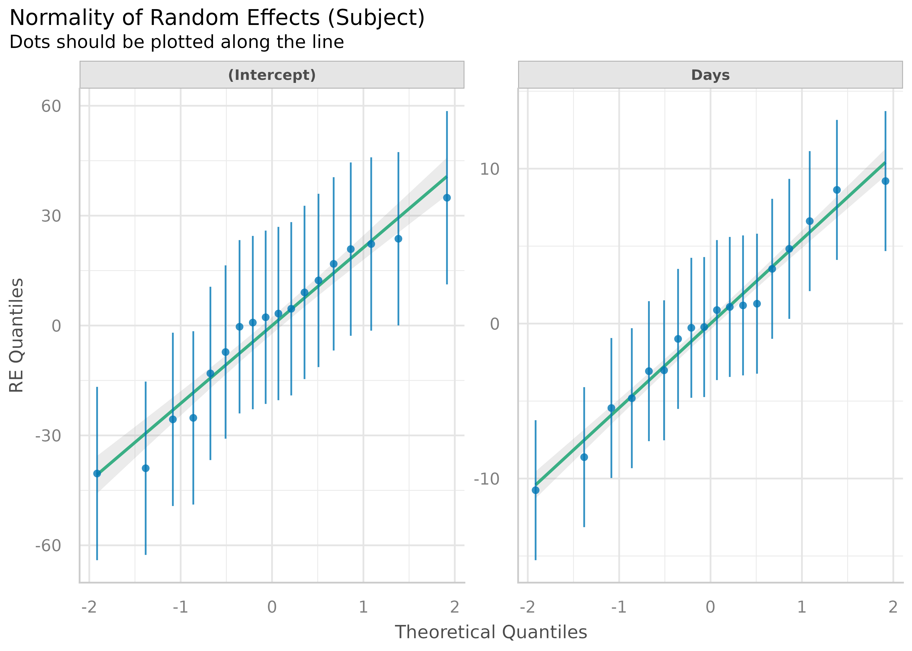

Checking Model Assumptions
Binned Residuals
(related function documentation)
model <- glm(vs ~ wt + mpg, data = mtcars, family = "binomial") binned_residuals(model) #> Warning: Probably bad model fit. Only about 50% of the residuals are inside the error bounds.

Check for Multicollinearity - Variance Inflation Factor
(related function documentation)
m <- lm(mpg ~ wt + cyl + gear + disp, data = mtcars) result <- check_collinearity(m) result #> # Check for Multicollinearity #> #> Low Correlation #> #> Parameter VIF Increased SE #> gear 1.53 1.24 #> #> Moderate Correlation #> #> Parameter VIF Increased SE #> wt 5.05 2.25 #> cyl 5.41 2.33 #> disp 9.97 3.16 plot(result)
library(glmmTMB) data(Salamanders) # create highly correlated pseudo-variable set.seed(1) Salamanders$cover2 <- Salamanders$cover * runif(n = nrow(Salamanders), min = .7, max = 1.5) # fit mixed model with zero-inflation model <- glmmTMB( count ~ spp + mined + cover + cover2 + (1 | site), ziformula = ~ spp + mined, family = truncated_poisson, data = Salamanders ) result <- check_collinearity(model) result #> # Check for Multicollinearity #> #> * conditional component: #> #> Low Correlation #> #> Parameter VIF Increased SE #> spp 1.07 1.04 #> mined 1.17 1.08 #> #> High Correlation #> #> Parameter VIF Increased SE #> cover 13.45 3.67 #> cover2 13.28 3.64 #> #> * zero inflated component: #> #> Low Correlation #> #> Parameter VIF Increased SE #> spp 1.08 1.04 #> mined 1.08 1.04 plot(result)

Check for Outliers
(related function documentation)
# select only mpg and disp (continuous) mt1 <- mtcars[, c(1, 3, 4)] # create some fake outliers and attach outliers to main df mt2 <- rbind(mt1, data.frame(mpg = c(37, 40), disp = c(300, 400), hp = c(110, 120))) # fit model with outliers model <- lm(disp ~ mpg + hp, data = mt2) result <- check_outliers(model) result #> Warning: 2 outliers detected (cases 31, 34). plot(result)

Check for Normal Distributed Residuals
(related function documentation)
model <- lm(mpg ~ wt + cyl + gear + disp, data = mtcars) result <- check_normality(model) #> OK: Residuals appear as normally distributed (p = 0.230).


Check for Heteroscedasticity
(related function documentation)
model <- lm(mpg ~ wt + cyl + gear + disp, data = mtcars) result <- check_heteroscedasticity(model) #> Warning: Heteroscedasticity (non-constant error variance) detected (p = 0.042). plot(result)

Check for Homogeneity
(related function documentation)
model <- lm(len ~ supp + dose, data = ToothGrowth) result <- check_homogeneity(model) #> OK: Variances in each of the groups are the same (Bartlett Test, p = 0.226). plot(result)

Overall Model Check
(related function documentation)
model <- lmer(Reaction ~ Days + (Days | Subject), sleepstudy) check_model(model) #> Not enough model terms in the conditional part of the model to check for multicollinearity.

check_model(model, panel = FALSE) #> Not enough model terms in the conditional part of the model to check for multicollinearity.


Compare Model Performances
(related function documentation)
compare_performance() computes indices of model performance for different models at once and hence allows comparison of indices across models. The plot()-method creates a “spiderweb” plot, where the different indices are normalized and larger values indicate better model performance. Hence, points closer to the center indicate worse fit indices.
data(iris) lm1 <- lm(Sepal.Length ~ Species, data = iris) lm2 <- lm(Sepal.Length ~ Species + Petal.Length, data = iris) lm3 <- lm(Sepal.Length ~ Species * Sepal.Width, data = iris) lm4 <- lm(Sepal.Length ~ Species * Sepal.Width + Petal.Length + Petal.Width, data = iris) result <- compare_performance(lm1, lm2, lm3, lm4) result #> # Comparison of Model Performance Indices #> #> Model | Type | AIC | BIC | R2 | R2_adjusted | RMSE | BF #> --------------------------------------------------------------------- #> lm1 | lm | 231.45 | 243.49 | 0.62 | 0.61 | 0.51 | #> lm2 | lm | 106.23 | 121.29 | 0.84 | 0.83 | 0.33 | 3.45e+26 #> lm3 | lm | 187.09 | 208.17 | 0.73 | 0.72 | 0.43 | 4.69e+07 #> lm4 | lm | 78.80 | 105.89 | 0.87 | 0.86 | 0.30 | 7.58e+29 plot(result)

Model and Vector Properties
(related function documentation)
model <- lmer(Reaction ~ Days + (Days | Subject), sleepstudy) result <- check_distribution(model) result #> # Distribution of Model Family #> #> Predicted Distribution of Residuals #> #> Distribution Probability #> normal 50% #> neg. binomial (zero-infl.) 16% #> gamma 12% #> #> Predicted Distribution of Response #> #> Distribution Probability #> lognormal 75% #> gamma 12% #> exponential 9% plot(result)

vec <- bayestestR::distribution_poisson(n = 500, lambda = 2.5) result <- check_distribution(vec) result #> # Predicted Distribution of Vector #> #> Distribution Probability #> poisson 56% #> negative binomial 38% #> poisson (zero-infl.) 6% plot(result)

ROC curves
(related function documentation)
data(iris) set.seed(123) iris$y <- rbinom(nrow(iris), size = 1, .3) folds <- sample(nrow(iris), size = nrow(iris) / 8, replace = FALSE) test_data <- iris[folds, ] train_data <- iris[-folds, ] model <- glm(y ~ Sepal.Length + Sepal.Width, data = train_data, family = "binomial") result <- performance_roc(model, new_data = test_data) result #> AUC: 62.34% plot(result)
